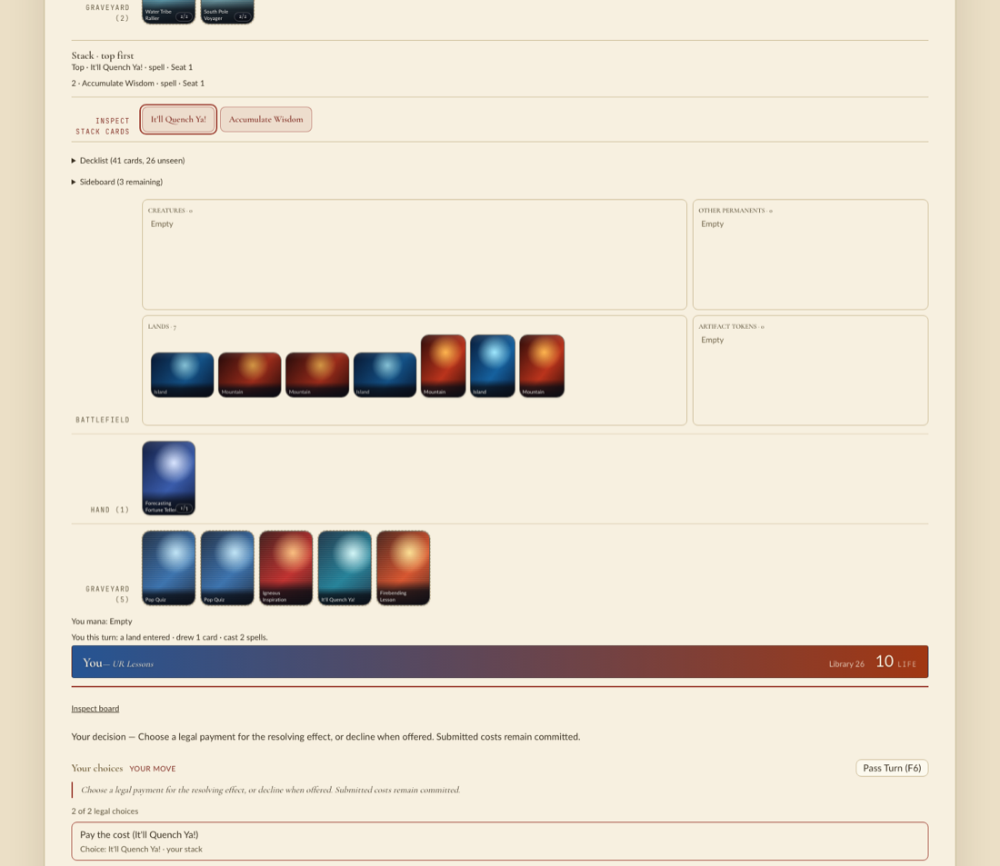

Observed 2026-11-12, headless, at 482635a8f against main c942af600. The laptop's load
average was 110–170 from other checkouts' builds throughout, so wall and user seconds are weak; instructions
retired and digests are not affected. The people this is for play games through the engine (training, evaluation,
Academy) and run its debug test suite. They should see the same game, faster, and no assertion failures.
Nothing broke and nothing was fixed in the engine. One addition: the working route is written into
.lf/skills/qa.md.
Did: built both release extensions (maturin build --release; main from a detached worktree), then
played 2,400 seeded random games on each by switching PYTHONPATH: the 14 authored TLA baseline and
Elemental matchups plus 2,340 games between human builds of the TLA pool corpus (509 distinct matchups, 922 playable
pools). Every decision hashed the full observation JSON (legal actions, tapped permanents, pools, events).
Saw: 0 of 2,400 games differ over 471,383 decisions. The games included 17,121 waterbend decisions (53,206 tap-for-cost offers), 20,201 pay-cost offers, 215,657 cast offers and 528,557 activation offers; pool decks bring Treasure, any-color and restricted-mana sources that the benchmark decks lack.
Noticed (also on main, identical there, so not from this change): two pool games end in an engine error.
pool:127b2c70/7a5d3c62 seed 340067 step 133: PyAgentError: not enough automatic mana pool:7ba44bb8/6367d16e seed 340431 step 123: PyAgentError: no legal targets
Reproduce with .runs/qa339/diff_play.py logic (in the qa skill): managym.Env(seed),
the two human builds, random.Random(seed).randrange(len(actions)) each step.
Did: built the extension in the dev profile (debug_assert! on), which runs the search beside every
direct answer, the fork oracle beside every waterbend candidate and a source rebuild on every shared reuse, and
replayed the first games of scenario 1.
Saw: 179 games (34,557 decisions, 1,152 waterbend decisions, 167 pool games) with no panic, each digest equal to the release run. The run was planned for 300 games and was stopped at its 50-minute limit on the loaded host.
Did: uv run manabot train --recipe local --device cpu --seed 339 on this engine and on main's.
Saw: both completed; all 110 tensors of self-play-raw.pt are bit-identical. run.json
differs only in identities, paths and seconds. The seconds favoured main in every phase, including learning that
never calls the engine, so they say nothing here.
Did: ./scripts/play --port 8339 --frontend-port 5339, headless Chromium, New Game against the random
opponent, played lands and cast every offered spell for three games' worth of runs.
Saw: no console or page errors. Cast offers followed the lands: with three lands Pop Quiz and Igneous Inspiration were offered and Firebending Lesson was not; after two casts with seven lands only It'll Quench Ya! remained. Below, two spells on the stack with the first four lands tapped in order and three left, then the pay-or-decline offer.

Noticed: one of four launches did not show a board within 30 s of New Game (load average about 170); it did not recur in the next two launches with a 60 s wait. No waterbend prompt came up in the browser games; scenario 1 covers those.
Did: rebuilt bench_steps and bench_search at HEAD and ran them interleaved with the saved
baseline binaries (scratch/payment-baseline/bin/*.e82a20033), /usr/bin/time -l.
| baseline | HEAD | change | |
|---|---|---|---|
| bench_steps instructions (3 runs each) | 62.43–62.51 G | 49.11–49.16 G | −21% |
| bench_steps user s | 3.48–3.50 | 2.78–2.82 | −20% |
| bench_search instructions (1 run each) | 1314.50 G | 944.75 G | −28% |
| bench_search user s | 74.17 | 53.11 | −28% |
All digests equal managym/perf/baseline.json: steps 15843333459759757527; search 13733780288109658817,
5337676601429031145, 10035331835025021780. This is the first bench_search run of the final
mana.rs.
Works now: identical play to main across authored and pool decks, identical training, clean Academy play, live debug assertions silent, both benchmarks faster with unchanged digests.
Not reached: CI's Engine Budget run (needs the published PR; the reference is then adopted with
scripts/engine_budget.py record --reason); the full debug Rust suites (the gate's job); a waterbend
decision in the browser; trained-policy play, since random play was the driver; debug games beyond the first 179.
Still wrong, worst first:
This file replaces the previous Task's scratch/qa.html that arrived with the main merge.